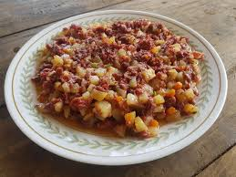

Home
Corned Beef

Description
Corned beef is a savory, canned meat made from finely shredded beef brisket that's been cured in salt and spices. In Filipino cuisine, it's commonly sautéed with onions (and sometimes potatoes) and served with rice and eggs for a hearty, flavorful breakfast.
Ingredients
- 1 can corned beef (210g–380g, like Argentina or Purefoods)
- 1 medium onion, sliced thinly
- 2–3 cloves garlic, minced (optional)
- 1 medium potato, diced (optional, for added texture)
- Cooking oil
- Salt and pepper, to taste
Steps for cooking
- (Optional) Fry the Potatoes
- Heat oil in a pan and fry diced potatoes until golden brown.
- Set aside.
- Sauté Aromatics
- In the same pan, add a little more oil if needed.
- Sauté garlic (if using) and sliced onions until fragrant and soft.
- Add the Corned Beef
- Add the canned corned beef and break it apart with a spatula.
- Stir-fry for 3–5 minutes until heated through and slightly browned.
- Combine with Potatoes
- Add the fried potatoes (if using) and mix well.
- Season with a bit of salt and pepper to taste (corned beef is usually salty, so go light on salt).
Home